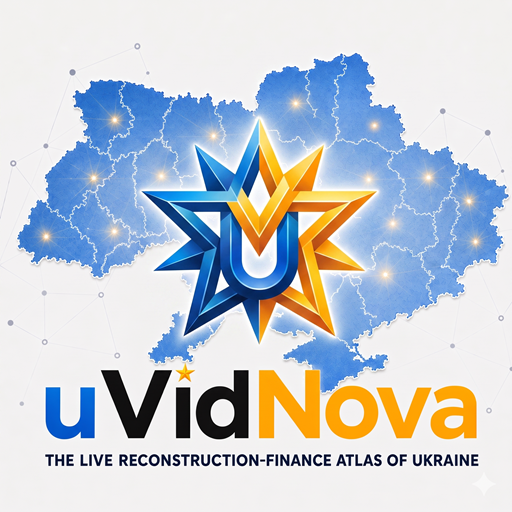
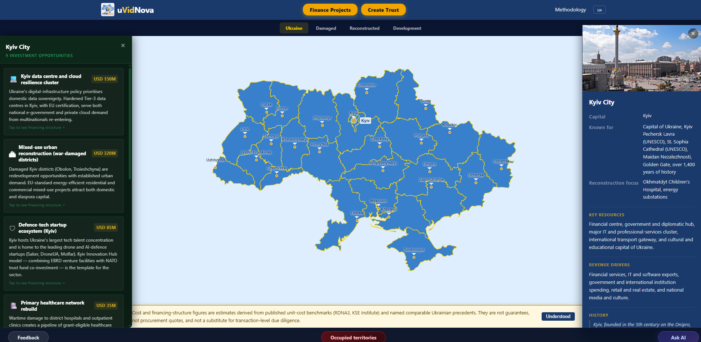

uVidNova
The AI-powered reconstruction-finance atlas of Ukraine
A non-profit AI atlas that maps Ukraine's reconstruction asset by asset. For every damaged school, hospital, bridge, or substation, the AI produces three deterministic cost paths — baseline / code-compliant / build-back-better — anchored to World Bank RDNA3 + KSE methodology, and pairs each with the financing structures most likely to fund it.
